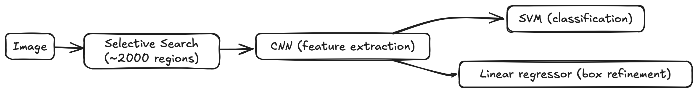
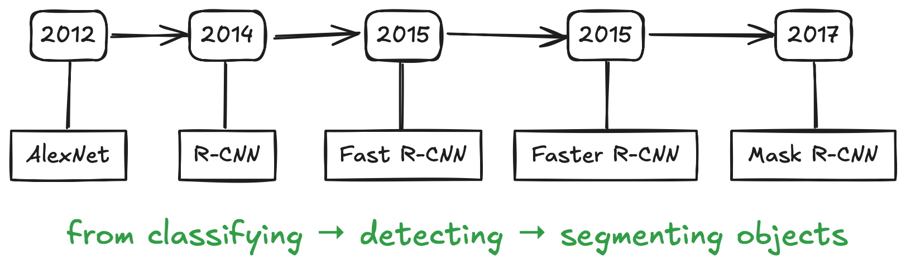

12 Exploring Advanced Neural Networks: Instance Segmentation
Overview
In the previous chapters, we learned how neural networks can recognize patterns in data, classify images, and even make pixel-wise predictions. But so far, our models could only tell what is in an image, but not where it is or what exact shape it has.
This chapter takes the next step. We’ll explore how neural networks evolved from simple classifiers into advanced models that can detect and outline every object in a scene, a task known as instance segmentation.
Think of it as moving from naming objects to understanding them in context.
For example, if a photo shows three dogs playing in the park, a classification network can tell you “there are dogs”.
An object-detection model goes further: “there are three dogs, each at these locations”.
An instance-segmentation model goes even further: “here are the three dogs and here are the exact pixels that belong to each one”.
In this section, you will:
- Understand the difference between classification, object detection, semantic segmentation, and instance segmentation.
- Learn how all these tasks share the same building blocks, input, feature extractor, and output, but differ in how those blocks are connected.
- Follow the historical path of neural networks from R-CNN1 → Fast R-CNN2 → Faster R-CNN3 → Mask R-CNN4, seeing how each new design solved a real problem from the previous one.
By the end, you’ll see that advanced models aren’t mysterious or built from scratch. They’re the result of asking new questions and tweaking familiar parts of the same network structure you already know.
Every time researchers faced a limitation, for example, “it’s too slow,” “it misses small objects,” “it can’t tell shapes apart”, they modified one of the three core components: input, feature extractor, or output.
As you read, try guessing which component each innovation changes!
12.1 What is instance segmentation?

Before diving into architectures, let’s first understand the concepts.
Computer vision has several “levels of understanding”, and each answers a slightly different question about an image.
| Task | What it asks | What the model outputs | Example thought |
|---|---|---|---|
| Image Classification | What kinds of objects are in this image? | One label per image | “This picture contains sheep.” |
| Object Detection | Where are those objects? | Bounding boxes + labels | “There are three sheep there and a dog here.” |
| Semantic Segmentation | Which class does each pixel belong to? | Pixel-wise class map | “Color every sheep pixel blue, every dog pixel red.” |
| Instance Segmentation | Which exact pixels belong to each individual object? | A mask + label for each instance | “Here are three separate sheep and a dog, each with its own outline.” |
Instance segmentation therefore combines the strengths of object detection and semantic segmentation. It both detects objects (like detection) and delineates them (like segmentation). The result is a collection of colored masks, each describing one distinct instance of an object.
Instance segmentation tells the model: Don’t just find all the cats, tell me which pixels belong to Cat #1, Cat #2, and Cat #3.
Behind the scenes, this requires the model to learn fine-grained spatial details while still recognizing object categories. It’s a bit like tracing a outline after recognizing the object’s identity.
Think of an example in your field:
Would you care the distinction between the different instances of the same object, or just the presence of the object? Would you rather have a box around a region, or the exact outline of that region’s shape?
That choice usually determines which task you need to solve.
12.2 Why Does It Matter?
Now that we know what instance segmentation is, let’s ask a simple question: why go through all that extra effort?
After all, drawing precise masks for every object sounds expensive and complex. But for many real-world problems, those extra pixels make a big difference.
1. Fine-grained precision
Bounding boxes only tell where an object roughly is. Instance segmentation tells exactly which pixels belong to it. That’s crucial whenever shape, size, or boundaries matter. For example, measuring a tumor, estimating crop coverage, or mapping glacial melt ponds.
2. Distinguishing look-alikes
Semantic segmentation colors all sheep the same color, as if they’re one big flock. Instance segmentation separates each sheep into its own mask. This distinction lets us count, track, and compare individuals, which is essential for crowd analysis, wildlife monitoring, or object-by-object statistics.
3. Enabling interaction
In robotics, augmented reality, or autonomous driving, systems must know where one object ends and another begins. With pixel-accurate masks, robots can grasp, avoid, or label objects more safely and reliably. Likewise, AR apps can anchor digital objects precisely on real-world surfaces.
Applications in the Wild
| Field | How instance segmentation helps |
|---|---|
| 🧬 Medical imaging | Identifies and measures individual organs, lesions, or cells with pixel-level accuracy 5. |
| 🤖 Robotics & automation | Allows robots to perceive and interact with separate objects in cluttered scenes 6. |
| 🌍 Environmental monitoring | Maps terrain features such as permafrost polygons or vegetation patches for change detection 7 8. |
In your own research or projects, where would pixel-level detail unlock new insight?
Try to picture the same task using only bounding boxes. What information would you lose?
Next, we’ll peek under the hood: how do models actually achieve these capabilities?
To answer that, we’ll revisit our three familiar friends: input, feature extractor, and output, and see how every “advanced” network is just a creative remix of those parts.
12.3 From Building Blocks to Advanced Networks
So far, we’ve seen what instance segmentation is and why it matters. Now, let’s look at how we can make a neural network actually do it.
The good news?
Every deep learning model, no matter how complex its name sounds, is built from the same three ingredients you’ve already met:
- Input adaptation: how data is prepared and passed into the network
- Feature extractor: the main body of the model that learns patterns
- Output adaptation: how the extracted information is translated into predictions

Think of it like a pipeline:
Input → Feature extractor → Output
Each part has its own job. When we move from classification to detection to segmentation, we don’t reinvent the pipeline; we just add new capabilities or modify one of the blocks to serve a different purpose.
| Task | Input | Feature Extractor | Output |
|---|---|---|---|
| Classification | Image | CNN backbone (e.g., ResNet-50) | Class probabilities |
| Object Detection | Image | Same backbone | Bounding boxes + class labels |
| Instance Segmentation | Image | Same backbone | Masks + class labels |
Notice how the feature extractor often stays the same, for example, ResNet-50, which you’ve already seen. What changes is mainly how we interpret those extracted features at the output.
This insight is powerful:
when researchers realized classification networks could already “see” complex features, they began reusing them for localization tasks: first for boxes, then for masks.
Each breakthrough (R-CNN, Fast R-CNN, Faster R-CNN, Mask R-CNN) simply tweaked one or more of these three blocks.
Advanced networks aren’t mysterious new inventions; they’re incremental upgrades built on the same foundation: input, features, output.
Imagine you want your network to predict depth maps or object edges. Which component, input, feature extractor, or output, would you modify first?
Next, we’ll start from the most familiar example: a classification network, and see how small architectural changes gradually lead us toward instance segmentation.
12.4 Starting Point: Classification Networks
Before we leap into detection and segmentation, let’s anchor ourselves in something familiar: image classification.
At its core, a classification network answers a simple question:
“What category does this image belong to?”
For example, given a picture of fruit, the network might output:
apple: 0.85, banana: 0.10, orange: 0.05Revisiting our three building blocks
| Component | Role in classification | Example (ResNet-50) |
|---|---|---|
| Input | Accept an image (e.g., 3 RGB channels) and resize/normalize it for the model. | 224 × 224 × 3 tensor |
| Feature Extractor | Learn rich visual patterns: edges → textures → shapes that describe the content. | Convolutional backbone of ResNet-50 |
| Output Adaptation | Convert those features into class probabilities. | Final fully-connected layer + softmax |
So, when we say “ResNet-50 backbone”, we’re really talking about the feature extractor block.
A quick look under the hood
Let’s load a pre-trained ResNet-50 from PyTorch and peek at its structure:
import torch
import torchvision.models as models
# Load the pre-trained ResNet-50 model
model = models.resnet50(pretrained=True)
print(model)You’ll see a long list of convolutional layers grouped into four stages (layer1 to layer4), followed by:
(avgpool): AdaptiveAvgPool2d(output_size=(1, 1))
(fc): Linear(in_features=2048, out_features=1000, bias=True)That last line, the fully connected (fc) layer, is the output adaptation. It converts the learned features into 1,000 ImageNet class scores.
Customizing for your own task
Suppose we want to classify images into 10 classes (say, 10 types of flowers). We keep the same input and feature extractor, but swap the output head:
import torch.nn as nn
# Replace the last layer with one suited for 10 classes
model.fc = nn.Linear(2048, 10)That’s it! You’ve adapted a world-class backbone for your own dataset.
Classification models like ResNet-50 form the starting point for many advanced vision systems. Later, object-detection and segmentation models will reuse this exact feature extractor and simply modify what happens after it.
If classification outputs a single label per image, what kind of modification might you need if you wanted to locate multiple objects instead?
Hint: the output block will need more than one prediction!
Next, we’ll follow that hint: evolving our classification network into models that can find and label multiple objects at once.
That journey begins with the first landmark in detection history: R-CNN.
12.5 The Evolution of Detection Models
Once we know how to classify an image, a natural next question appears:
“Can the model also tell me where each object is?”
This question led to one of the most important breakthroughs in computer vision: the evolution from simple classification to object detection, and eventually, instance segmentation.
Let’s trace this evolution through four key milestones:
R-CNN → Fast R-CNN → Faster R-CNN → Mask R-CNN.
Each model solves one major bottleneck of its predecessor.
12.5.1 R-CNN: The First Step
Imagine you’re a detective asked to locate every cat in a giant city photograph. You could inspect every pixel one by one, but that would take forever. Instead, you might first mark possible locations (windows, rooftops, gardens) and then zoom into each to decide whether a cat is really there.
That’s exactly the idea behind R-CNN (Region-based Convolutional Neural Network), proposed by Ross Girshick et al. in 2014 9.
It was the first deep-learning model to detect and localize objects successfully.
Step 1: Propose candidate regions

Before any neural network runs, R-CNN uses a separate algorithm called Selective Search10 to guess where objects might be. Think of it as a diligent assistant drawing ~2000 rectangles around promising areas of the image based on color, texture, and edges.
Each rectangle, called a region proposal, is a possible object.
Step 2: Extract features for each region
For every proposed region, we crop that portion of the image, resize it to a standard size, and feed it through a CNN (for example, AlexNet or ResNet).
The CNN acts as the feature extractor, producing a numerical fingerprint that describes the visual content.
# Pseudocode for R-CNN feature extraction
for region in selective_search(image):
crop = resize(image[region], (224, 224))
features = cnn(crop)Because there are ~2000 regions, this step runs the CNN thousands of times per image. This is a key limitation we’ll revisit soon.
Step 3: Classify and refine boxes
Once we have the feature vector for each region:
- A Support Vector Machine (SVM) predicts which class the region belongs to (cat, dog, car, …).
- A linear regression model fine-tunes the coordinates of the bounding box to fit the object more tightly.
cls_score = svm(features)
bbox = regressor(features)So R-CNN’s output consists of bounding boxes and class labels.
Step 4: Combine the results
Finally, overlapping boxes are merged using Non-Maximum Suppression (NMS) 11 so only the best one remains for each object.
The full pipeline looks like this:

How R-CNN fits into our three-block framework
| Component | What R-CNN does |
|---|---|
| Input adaptation | Image + region proposals from Selective Search |
| Feature extractor | CNN applied separately to each region |
| Output adaptation | SVM + regressor for class + bounding box |
What made R-CNN revolutionary
- First to prove that deep CNN features outperform hand-crafted features (like HOG or SIFT) for object recognition.
- Showed that localizing multiple objects could be framed as multiple independent classification problems.
- Inspired the whole family of “Region-based CNNs” that followed.
But… it was painfully slow
- ~2000 regions × 1 CNN forward pass ≈ minutes per image.
- Multi-stage training: CNN, then SVM, then regressor, then fine-tuning.
- Heavy disk usage: each cropped region saved separately to disk before training.
The model worked, but not for real-time applications. Researchers loved its accuracy but craved speed.
If every proposed region needs its own CNN pass, what could you change in the feature extractor to make this process faster?
Up next, we’ll see how Fast R-CNN answered exactly that question: by realizing we can share computation across all regions instead of repeating it thousands of times.
12.5.2 Fast R-CNN: Sharing Features
R-CNN worked, but it was painfully slow. Imagine our detective from earlier: instead of scanning one high-resolution map, they visit every single building in the city one by one. It works, but it’s exhausting.
Ross Girshick, the same researcher who created R-CNN, asked a simple but brilliant question in 2015:
“What if we extract features just once for the whole image, and reuse them for all regions?”
That idea became Fast R-CNN – a version that was not only faster but also simpler and more elegant.
The key idea: share the feature map
Instead of running a CNN 2000 times, Fast R-CNN runs it once on the entire image to create a shared feature map. Each proposed region (from Selective Search) is then projected onto this feature map rather than cropped directly from the raw image.

So, instead of thousands of redundant CNN computations, we reuse the same deep features everywhere.
Step-by-step walkthrough
Input: Feed the entire image into the CNN backbone (e.g., VGG16 or ResNet).
feature_map = cnn(image)Region proposals: Use Selective Search to get ~2000 candidate regions (same as R-CNN). These are now rectangles in image coordinates.
Map regions onto the feature map: Each region is projected from image coordinates to the corresponding area on the feature map.
RoI Pooling: This is Fast R-CNN’s most clever trick. Because proposed regions vary in size, we can’t feed them directly into a fully connected layer. RoI Pooling crops the portion of the feature map corresponding to each region and pools it into a fixed spatial size (for example, 7×7).
for roi in proposals: roi_feat = roi_pool(feature_map, roi, output_size=(7, 7))Classification and bounding box regression: Each RoI feature (7×7×C) is flattened and sent through two fully connected layers, producing:
- Class scores
- Bounding box refinements
cls_score, bbox = head(roi_feat)
Unified training and loss
Unlike R-CNN, which trained separate models (CNN → SVM → regressor), Fast R-CNN trains everything together using a multi-task loss:
\[ L = L_\text{cls} + \lambda L_\text{bbox} \]
- \(L_\text{cls}\): classification loss (softmax cross-entropy)
- \(L_\text{bbox}\): bounding box regression loss (smooth L1)
This end-to-end training makes the model both faster to train and more accurate.
What improved from R-CNN
| Aspect | R-CNN | Fast R-CNN | Improvement |
|---|---|---|---|
| Feature extraction | Separate CNN per region | One CNN per image (shared) | 🚀 10–20× faster |
| Training | Multi-stage (CNN, SVM, regressor) | Unified, single-stage | Simpler |
| Storage | Pre-compute region features | On-the-fly computation | No extra disk space |
| Accuracy | High | Higher (better end-to-end learning) | ✔️ |
But one bottleneck remains…
Even though feature extraction became efficient, region proposals were still generated by the external Selective Search algorithm. Selective Search was CPU-based and slow. It took nearly two seconds per image.
So, while inference was much faster, it wasn’t yet real-time.
How Fast R-CNN fits into our three-block framework
| Component | What changed from R-CNN |
|---|---|
| Input adaptation | Still uses region proposals (Selective Search), but processes one shared image feature map. |
| Feature extractor | Shared CNN backbone computes features once. |
| Output adaptation | Unified head with RoI Pooling + fully connected layers for classification and box regression. |
Fast R-CNN taught us that most of the heavy computation in object detection could be shared.
It’s like realizing you don’t need to bake a separate cake for each guest. You just slice one big cake into pieces.
If Selective Search is now the slowest part, what if we teach the network itself to generate region proposals automatically?
That question led directly to the next major leap: Faster R-CNN: a model that learns to propose its own regions, eliminating Selective Search altogether.
12.5.3 Faster R-CNN: End-to-End Detection
Our detective has gotten smarter.
In R-CNN, they searched every building; in Fast R-CNN, they looked at one satellite map and zoomed in on areas of interest.
But they’re still relying on a human assistant (Selective Search) to tell them where to look next and that assistant is slow.
So, in 2015, a new idea arrived:
“What if the network itself could learn where objects are likely to appear?”
This question gave birth to Faster R-CNN by Shaoqing Ren et al. (2015) 12, the first truly end-to-end object-detection framework. Its secret weapon: the Region Proposal Network (RPN).
The key innovation: Region Proposal Network (RPN)
The RPN is a tiny neural network that slides over the shared feature map (produced by the CNN backbone) and proposes potential object regions automatically. In other words, the network learns to generate its own “Select me!” boxes.

Step-by-step walkthrough
Feature extraction: As before, we start with a CNN backbone (e.g., ResNet-50 or VGG-16) that processes the entire image once:
feature_map = cnn(image) # shared backboneThis feature map is now shared by two heads: the RPN (proposal generator) and the detection head (classifier + box regressor).
Generate anchors: At each location on the feature map, the model places a small set of anchor boxes – templates of different sizes and aspect ratios. You can think of them as little “nets” cast over the image, waiting to be adjusted.
anchors = generate_anchors(feature_map, scales=[128,256,512], ratios=[0.5,1,2])Each anchor will be tested: “Does this anchor contain an object?”
Predict objectness and box offsets: The RPN slides a 3×3 convolutional window over the feature map. For each anchor, it outputs:
- an objectness score (probability that an object exists here), and
- a bounding-box offset to refine the anchor’s shape and position.
for anchor in anchors: obj_score, bbox_offset = rpn_head(feature_map, anchor)After this step, the RPN has thousands of proposals with confidence scores.
Select top proposals: A post-processing step called Non-Maximum Suppression (NMS) removes redundant boxes. Typically, the top ~2000 highest-scoring proposals (300 in practice) are kept.
proposals = nms(anchors, obj_score, top_k=300)These proposals replace the old Selective Search regions.
RoI Pooling → Detection Head: Each proposed region is cropped (via RoI Pooling or RoI Align) from the shared feature map and fed into the detection head — the same classification + box regression module introduced in Fast R-CNN:
for roi in proposals: roi_feat = roi_pool(feature_map, roi) cls_score, bbox = head(roi_feat)
Training as one network
Both the RPN and the detection head share the same convolutional features and are trained jointly. The total loss combines RPN loss + detection loss:
\[ L = L_\text{RPN-cls} + L_\text{RPN-bbox} + L_\text{Det-cls} + L_\text{Det-bbox} \]
This means the entire system, from pixels to final boxes, learns together.
Why it matters
| Aspect | Fast R-CNN | Faster R-CNN | Improvement |
|---|---|---|---|
| Region proposals | Hand-crafted Selective Search (CPU) | Learned Region Proposal Network (GPU) | 🚀 100× faster |
| End-to-end training | Partial (Selective Search external) | Fully integrated | Unified |
| Speed | ~2 FPS on GPU | ~10 FPS on GPU | Real-time possibility |
| Accuracy | High | Higher (learned proposals fit better) | ✔️ |
The RPN made object detection practical for real-world systems and set the foundation for everything that came after, including instance segmentation.
How Faster R-CNN fits into our three-block framework
| Component | What changed from Fast R-CNN |
|---|---|
| Input adaptation | Added Region Proposal Network to generate anchors and proposals internally. |
| Feature extractor | Shared backbone features used by both RPN and detection head. |
| Output adaptation | Two branches (classification + regression) refine proposals end-to-end. |
A mental picture
It’s as if our detective now works with a drone that automatically highlights potential objects from above. The detective still classifies them (cat, dog, car…), but no longer wastes time choosing where to look.
Faster R-CNN solved the last major bottleneck by teaching the network to propose its own regions. The result is a fully trainable system that detects objects with both speed and precision.
If the model can now predict object locations and labels efficiently, what extra branch would you add to also predict each object’s exact shape?
Up next is exactly that extension: Mask R-CNN, which builds on Faster R-CNN to perform full instance segmentation, adding a mask prediction head for pixel-level detail.
12.6 Mask R-CNN: From Detection to Segmentation
At this point, our detective is lightning-fast. Thanks to Faster R-CNN, they can spot every object in a scene almost in real time. But there’s still one question left unanswered:
“Can you draw the precise outline of each object, not just a box around it?”
This challenge led to Mask R-CNN by Kaiming He et al. (2017) 13, a direct successor to Faster R-CNN that added the ability to perform instance segmentation, predicting a mask for every detected object.
Mask R-CNN didn’t reinvent the wheel; it simply bolted one more well-designed component onto the same framework.
The key idea: Add a mask branch
Faster R-CNN already produced bounding boxes and class labels. Mask R-CNN adds a third parallel branch that predicts a binary mask, a small image showing which pixels belong to the detected object.

So for each proposed region, the model now outputs:
- Class label
- Bounding box
- Segmentation mask
All three are trained together in one network.
Step-by-step walkthrough
2. RoI Align: precise region cropping
Fast / Faster R-CNN used RoI Pooling to crop regions of interest, but pooling involved rounding coordinates to integers, which introduced slight misalignments. Those pixel-level shifts are small for detection, but catastrophic for mask accuracy.
RoI Align fixes this by using bilinear interpolation instead of quantization, preserving exact spatial locations.
roi_feat = roi_align(feature_map, roi, output_size=(14,14))Each RoI now corresponds perfectly to its true image region.
3. Three parallel heads
Once features are extracted, they’re sent into three separate branches:
| Head | Output | Purpose |
|---|---|---|
| Classification head | Class scores | Identify what the object is |
| Bounding box head | Box offsets | Refine position + size |
| Mask head | Pixel mask (28×28) | Predict which pixels belong to the object |
cls_score, bbox = det_head(roi_feat)
mask_logits = mask_head(roi_feat) # small conv decoder
mask = sigmoid(mask_logits)Each mask head is a lightweight CNN (often 4 conv layers) that outputs one binary mask per class.
4. Training the mask branch
Only the RoIs corresponding to foreground objects are used for mask training. The loss is a pixel-wise binary cross-entropy between predicted and true masks:
\[ L_\text{mask} = \frac{1}{N} \sum_{i} \text{BCE}(M_i^\text{pred}, M_i^\text{gt}) \]
The total loss combines all three branches:
\[ L = L_\text{cls} + L_\text{bbox} + L_\text{mask} \]
Everything is trained together, end-to-end.
How Mask R-CNN fits into our three-block framework
| Component | What changed from Faster R-CNN |
|---|---|
| Input adaptation | Same as Faster R-CNN (image → feature map → RPN proposals) |
| Feature extractor | Shared backbone + RoI Align for precise spatial features |
| Output adaptation | Added a mask branch (28×28 pixel-wise prediction per instance) |
Code peek: using Mask R-CNN in PyTorch
PyTorch makes this architecture accessible with just a few lines:
import torchvision.models.detection as detection
# Load a pretrained Mask R-CNN (ResNet-50 backbone)
model = detection.maskrcnn_resnet50_fpn(pretrained=True)
model.eval()
# Forward pass
predictions = model([image]) # image: Tensor [C,H,W]Each prediction contains:
boxes– bounding boxeslabels– class IDsscores– confidence valuesmasks– [ N × 1 × H × W ] tensor of pixel-level masks
You can threshold and overlay these masks to visualize segmentation results.
Why it matters
| Aspect | Faster R-CNN | Mask R-CNN | Improvement |
|---|---|---|---|
| Output | Boxes + labels | Boxes + labels + masks | 🟢 Pixel-level precision |
| Alignment | RoI Pooling (rounding) | RoI Align (interpolation) | 🟢 No quantization error |
| Capability | Object detection | Instance segmentation | 🟢 New dimension of understanding |
A mental picture
Our detective can now not only say
“There’s a cat at these coordinates,” but also trace its exact fur outline, whiskers and all. No more rough boxes — just precise boundaries.
Mask R-CNN is Faster R-CNN with one extra branch and a more careful alignment step.
A tiny change in architecture enabled a huge leap in capability, from detecting objects to understanding their shapes.
Which of the three components, input, feature extractor, or output, did Mask R-CNN change most significantly?
How might you extend the same idea to tasks like keypoint detection or depth estimation?
Mask R-CNN set a template for modern segmentation and instance-aware vision models.
Next, we’ll step back and see how all these models, from R-CNN to Mask R-CNN, fit together in one unified story.
12.7 Putting It All Together
We’ve traveled quite a distance from recognizing what is in an image to outlining where and what shape each object takes. Let’s step back and see how every step in this journey fits together.
From classification to instance segmentation
| Generation | Year | Key Idea | Input Adaptation | Feature Extractor | Output Adaptation |
|---|---|---|---|---|---|
| Classification Network | 2012 (AlexNet) | Recognize categories in whole images. | Full image | CNN backbone (e.g., ResNet) | Class probabilities |
| R-CNN | 2014 | Detect objects using region proposals + independent CNNs. | Selective Search regions | Separate CNN per region | SVM + regressor |
| Fast R-CNN | 2015 | Share convolutional features + RoI Pooling. | Selective Search | One shared CNN per image | Unified head for classification + bbox |
| Faster R-CNN | 2015 | Learn region proposals via Region Proposal Network (RPN). | RPN (anchors + proposals) | Shared backbone (CNN + FPN) | End-to-end classification + bbox |
| Mask R-CNN | 2017 | Add mask prediction head for pixel-level segmentation. | Same as Faster R-CNN | Shared backbone + RoI Align | Three parallel heads (cls, bbox, mask) |
Visual timeline

Each new architecture didn’t replace the old; it refined one of the three building blocks to solve a real bottleneck:
| Component Modified | Examples | Goal |
|---|---|---|
| Input adaptation | R-CNN (Selective Search), Faster R-CNN (RPN) | Generate or refine region proposals |
| Feature extractor | Fast R-CNN (shared CNN) | Reuse computation efficiently |
| Output adaptation | Mask R-CNN (mask head) | Predict more detailed outputs |
A recurring pattern
Every innovation begins by asking: “What can’t the current model do well?” and then tweaking one of the three parts to fix it.
This pattern defines much of deep learning progress:
- Better inputs → more context (multi-scale images, temporal frames, extra bands).
- Stronger feature extractors → deeper, more efficient backbones (ResNet, Swin, ViT).
- Richer outputs → new tasks (masks, depth, keypoints, motion).
Once you start thinking in this modular way, “advanced models” stop feeling like magic, they become creative recombinations of familiar ideas.
A unifying view

All four models share the same skeleton:
- A backbone that learns features.
- A proposal mechanism (external or learned).
- One or more heads that interpret those features for different tasks.
The Mask R-CNN simply made that skeleton multi-talented — detecting, classifying, and segmenting all at once.
From R-CNN to Mask R-CNN, progress wasn’t about adding complexity for its own sake. It was about removing redundancy, integrating stages, and expanding output richness all while keeping the same underlying logic.
If you were to design “the next R-CNN,” what might you change? Would you feed richer inputs (e.g., multispectral data)? Use a new feature extractor (e.g., transformer backbone)? Or predict new outputs (e.g., elevation maps, uncertainty masks)?
12.8 Reflection and Discussion
Let’s pause and reflect on what we’ve learned.
From R-CNN to Mask R-CNN, each step wasn’t random, it was a logical response to a real problem. This mindset is what separates using deep learning from understanding it.
Looking back
| Model | Challenge it solved | Core idea introduced |
|---|---|---|
| R-CNN | How can a CNN detect multiple objects? | Apply CNN to region proposals (Selective Search) |
| Fast R-CNN | Why is R-CNN so slow? | Share one feature map for all regions |
| Faster R-CNN | Can we remove the slow proposal step? | Learn proposals via Region Proposal Network (RPN) |
| Mask R-CNN | Can we see object shapes, not just boxes? | Add a mask head + precise RoI Align |
Notice how each question leads to an architectural insight and how every model keeps the same foundation:
input adaptation → feature extractor → output adaptation.
Reflection Prompts
Imagine you are designing your own vision model.
- Which component (input, feature, output) would you modify first?
- What kind of task would that change enable (for example, predicting object depth or motion)?
Sketch your own “R-CNN++”:
- Keep the same three blocks.
- Add one new branch or data source.
- Write a one-sentence explanation of why it improves the model. You don’t need code, just reasoning.
Why do you think so many breakthroughs (R-CNN → Mask R-CNN → modern detectors) reused the same ideas instead of starting from scratch?
What does this tell us about how innovation happens in deep learning?
Key takeaway
Deep learning progress often follows a simple pattern:
Question → Limitation → Innovation
Each new model asks:
“What can’t the current system do well?” and then modifies one of the core building blocks to fix it.
When you look at architectures through this lens, they stop feeling like black boxes, and start looking like creative engineering solutions to everyday problems.
R. Girshick, J. Donahue, T. Darrell, J. Malik, “Rich feature hierarchies for accurate object detection and semantic segmentation,” CVPR 2014.↩︎
S. Ren, K. He, R. Girshick, J. Sun, “Faster R-CNN: Towards Real-Time Object Detection with Region Proposal Networks,” NIPS 2015.↩︎
K. He, G. Gkioxari, P. Dollár, R. Girshick, “Mask R-CNN,” ICCV 2017.↩︎
https://www.linkedin.com/pulse/medical-image-diagnosis-roles-object-detection-segmentation-egvcc↩︎
Zhang, W., Witharana, C., Liljedahl, A. K., & Kanevskiy, M. (2018). Deep convolutional neural networks for automated characterization of arctic ice-wedge polygons in very high spatial resolution aerial imagery. Remote Sensing, 10(9), 1487.↩︎
Li, W., Hsu, C. Y., Wang, S., Witharana, C., & Liljedahl, A. (2022, November). Real-time GeoAI for high-resolution mapping and segmentation of arctic permafrost features: the case of ice-wedge polygons. In Proceedings of the 5th ACM SIGSPATIAL international workshop on AI for geographic knowledge discovery (pp. 62-65).↩︎
R. Girshick, J. Donahue, T. Darrell, J. Malik, “Rich feature hierarchies for accurate object detection and semantic segmentation,” CVPR 2014.↩︎
J. Uijlings, K. van de Sande, T. Gevers, and A. Smeulders, “Selective search for object recognition,” International Journal of Computer Vision, vol. 104, no. 2, pp. 154-171, 2013.↩︎
Non-Maximum Suppression Theory and Implementation in PyTorch↩︎
S. Ren, K. He, R. Girshick, J. Sun, “Faster R-CNN: Towards Real-Time Object Detection with Region Proposal Networks,” NIPS 2015.↩︎
K. He, G. Gkioxari, P. Dollár, R. Girshick, “Mask R-CNN,” ICCV 2017.↩︎